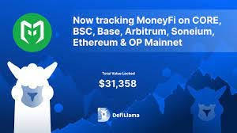

Swap DefiLlama 's Wallet Integration: My Journey Through the Wild West of DeFi
Remember that time I tried to explain cryptocurrency to my grandma? It went about as well as you'd expect. She ended up thinking I was trying to sell her a timeshare on the moon. Integrating wallets with DefiLlama felt slightly less confusing, but only slightly. It's a world of constantly shifting sands, isn't it? One minute you're basking in the glow of a successful swap, the next you're staring blankly at a screen full of hexadecimal code, wondering if you accidentally sent your life savings to a black hole. (Okay, maybe that's a slight exaggeration, but the anxiety is real!)
So, I decided to dive headfirst – or maybe toe-first, given my initial apprehension – into the process of integrating my wallets with DefiLlama. My goal? To get a clearer picture of my sprawling DeFi portfolio, the kind of panoramic view you get only after climbing a really, really steep mountain. The promise was a consolidated view of all my assets, across various protocols. Sounds amazing, right? In theory, yes. In practice… well, let's just say it involved a healthy dose of trial and error.
First, let me just say – the documentation could use some… love. I’m not saying I’m a coding whiz, but I’ve navigated my fair share of complex software. This felt more like deciphering an ancient scroll written in a language spoken only by mythical DeFi unicorns. Okay, maybe that’s dramatic, but there were moments of intense frustration. I found myself muttering things under my breath that would make a sailor blush.
However, slowly but surely, I began to crack the code (pun intended!). The key, I discovered, wasn't in memorizing every single API key or understanding the intricacies of blockchain technology. No, the real key was patience. And a good cup of coffee. Lots of coffee.
The process itself, once I got the hang of it, wasn’t overly complicated. Connecting my MetaMask wallet, for instance, was relatively straightforward. The platform guides you through the process with relative ease – at least compared to the documentation! However, linking my other wallets proved slightly more challenging. Some required more fiddling, others just wouldn't cooperate. I even considered bribing them with digital cookies. (Sadly, that didn't work.)
But here's the thing: the payoff was worth it. Seeing everything – my meager holdings across various DeFi platforms – neatly laid out on DefiLlama’s dashboard was almost… cathartic. It felt like finally organizing my sock drawer after years of chaotic neglect. It provided a level of clarity I hadn't previously had. I could instantly see my total value across different protocols, identify any potential risk, and track my performance over time. That's immensely useful for anyone trying to navigate the complexities of decentralized finance.
So, was the journey smooth sailing? Absolutely not. Was it worth it? A resounding yes. The experience taught me more than just how to integrate wallets with DefiLlama; it reinforced the importance of patience, persistence, and the occasional caffeine fix. It also showed me that, even in the often bewildering world of decentralized finance, a little bit of organization can go a long way. Now, if only I could convince my grandma to feel the same way... Maybe I'll start with those digital cookies.

Lost in the DeFi Jungle: My (Surprisingly Smooth) Journey Connecting MetaMask to DefiLlama
Okay, let's be honest. The world of decentralized finance (DeFi) feels a bit like navigating a jungle teeming with exotic creatures (some friendly, some… less so) – all while wearing a blindfold made of jargon. I mean, "impermanent loss," "gas fees," "liquidity pools"— it's enough to make you want to stick to good old-fashioned savings accounts. But the potential rewards? They’re too tempting to ignore. My latest adventure? Taming the beast that is connecting my MetaMask wallet to DefiLlama – and it wasn't nearly as terrifying as I'd imagined.
I'll admit, my initial foray into the DeFi wilderness was… rocky. I felt like Indiana Jones stumbling into a booby-trapped temple. Every click felt like a gamble. The thought of accidentally sending all my hard-earned ETH to some rogue smart contract kept me up at night. (Seriously, I even dreamt about it. It involved a llama, surprisingly.)
So, when I needed to use DefiLlama – this amazing aggregator that shows you essentially all the DeFi protocols and their performance – my palms were sweating. But, I figured, if I could survive the initial shock of learning about yield farming, I could probably handle this.
The first step, as always, was making sure my MetaMask wallet was properly funded. (Pro tip: Don't rely on screenshots of your balance; always double-check directly on the blockchain explorer. Trust me, I learned this the hard way. Let's just say a certain amount of ETH vanished into thin air… only to reappear a few hours later. Blockchain magic, I guess?)
Connecting MetaMask to DefiLlama is surprisingly intuitive, though. I’d braced myself for a convoluted multi-step process involving complex cryptographic keys and sacrificing a small goat to the blockchain gods. But, instead, I found a simple “Connect Wallet” button. This is where my inner skeptic popped up – was it too easy? Was I walking into a trap?
But, no. I clicked the button, selected MetaMask from the list of supported wallets, and within seconds, my wallet was linked. My meticulously researched DeFi jungle survival guide (which mainly consisted of YouTube tutorials and a few frantic Google searches) seemed redundant. DefiLlama's dashboard sprang to life, displaying an overview of my holdings and activities across various DeFi protocols. It was like magically turning on the lights in that previously dark and scary jungle.
Now, it’s important to note, connecting your wallet doesn't automatically grant any platform access to your funds. It just allows DefiLlama to show you your data. Think of it like giving a travel agent access to your flight itinerary — they can see where you’re going, but they can’t steal your luggage. (Hopefully!)
Looking back, the whole process was remarkably smooth. Maybe it’s because I’ve been slowly acclimating myself to the world of crypto, perhaps it was sheer dumb luck. Or maybe DefiLlama is just that well-designed. Whatever the reason, I was pleasantly surprised.
This whole experience reminded me that sometimes, the things we fear the most turn out to be less daunting than we anticipated. The DeFi jungle is still a jungle, filled with potential pitfalls, but with the right tools and a healthy dose of caution, navigating it becomes a little less terrifying. And honestly, being able to easily track my DeFi holdings without feeling like I’m about to unleash some sort of financial apocalypse? Priceless. Next up, learning to actually use those dApps intelligently. Wish me luck!
The Day My Crypto Wallet Finally 'Talked' to DefiLlama (and Why You Should Care)
Okay, so picture this: I'm knee-deep in DeFi – you know, the wild west of decentralized finance. I'm trying to swap some obscure token, something with a name like "Galactic Unicorn Farts" (I'm not making that up, trust me), using DefiLlama's aggregator. It's supposed to find the best rates, right? But I'm stuck. My MetaMask wallet, my faithful companion in this crypto odyssey, feels like it's stubbornly refusing to cooperate. It's like trying to explain quantum physics to a grumpy cat.
The problem? Connecting my wallet to DefiLlama to actually do the swap. I've spent ages fiddling with buttons, feeling like a digital Luddite. It felt... frustratingly archaic for something so supposedly revolutionary. I mean, shouldn't this stuff be seamless? Like, I should just be able to wave my hand and poof, swap complete. (Okay, maybe that's a bit much, even for DeFi).
Then, a little lightbulb moment. WalletConnect. I'd heard the term whispered in hushed, reverent tones in various crypto Telegram groups – a magical bridge between my wallet and the DeFi world. I was skeptical, to say the least. It sounded almost too easy. Remember that feeling when you're trying a new recipe and secretly suspect it's going to be a disaster? That's how I felt.
But desperation (and the allure of swapping those Galactic Unicorn Farts) drove me on. I decided to give WalletConnect a try with DefiLlama. And, to my utter surprise, it actually worked. No more clunky browser extensions, no more tedious manual approvals. It was like finally understanding the joke everyone else was in on. My wallet, previously a recalcitrant teenager, was suddenly a cooperative member of the family.
Now, I know what you might be thinking: "Big deal, it's just connecting a wallet." But bear with me. It's not just that. It's the underlying principle of interoperability. It's the small step toward a more user-friendly, accessible DeFi ecosystem. Think of it like this: before WalletConnect, swapping tokens was like using a rotary phone to order a pizza. Now, it's closer to ordering via a slick app with a few taps.
Of course, it wasn't perfectly smooth sailing. There was a moment where I briefly panicked, thinking I’d accidentally sent all my savings to some shady contract (a feeling I’m sure many crypto users are familiar with!). My heart rate spiked for a minute. But, thankfully, everything went through without a hitch.
The journey wasn’t without its bumps, and the sheer number of different DeFi protocols and their varying interfaces can sometimes feel overwhelming. I also still think a bit of hand-waving would make things significantly easier. But WalletConnect with DefiLlama, for me, represented a small victory in the ongoing battle for DeFi usability. It’s a reminder that even in the chaotic world of crypto, progress is being made, one connected wallet at a time.
And that, my friends, is why I felt compelled to share this seemingly mundane experience. Because sometimes, the smallest victories – like smoothly swapping Galactic Unicorn Farts – can feel like giant leaps forward in the often frustrating, yet endlessly fascinating world of decentralized finance.
DefiLlama's Swap Feature: My Accidental Near-Disaster & Your Survival Guide
Okay, so picture this: it's 3 AM. I'm fueled by lukewarm coffee and the intoxicating allure of potentially-massive DeFi gains. I'm checking DefiLlama, admiring the dizzying array of swap opportunities – thinking, "Ooh, shiny new token! Let's throw some ETH at it and become a crypto millionaire!" Classic move, right? Except, nearly thirty seconds later, I realized I’d almost just made a ridiculously stupid mistake. I’d forgotten, in my caffeine-induced haze, to double, triple, and quadruple check the security aspects.
That little near-miss completely jolted me. I’d been using DefiLlama's swap feature for a while, but I'd become complacent. That's the dangerous thing about familiarity; it breeds a false sense of security. Which brings us to the real point of this article: security best practices when using DefiLlama’s swap function – lessons learned the hard way, folks.
First off, let's be clear: DefiLlama is an incredible resource. It's like a Google Maps for the decentralized finance world, offering a fantastic overview of various protocols and their associated liquidity pools. But it's not a security auditor. It presents information; it doesn’t guarantee its accuracy or the security of the underlying platforms. Remember that. Seriously, remember that.
So, how do you protect yourself? Well, there’s no magic bullet, no single solution that guarantees safety in this wild west of decentralized finance. But here are a few things that hammered home for me after my near-miss:
Always, always, always verify the contract address: This is the bedrock of DeFi security. Don't just click the shiny button. Before you swap anything, copy the contract address displayed on DefiLlama and independently verify it on the official website of the protocol you're interacting with. A slight discrepancy? That's your cue to bail. Seriously, bail. Don't be a hero.
Use a hardware wallet: This isn't just a good idea; it's essential. Software wallets have their place, but when dealing with significant sums (or even small sums, for that matter), the extra layer of security a hardware wallet provides is invaluable. Think of it like this: would you leave your front door unlocked if you had a million dollars in your house? No!
Understand slippage and fees: DefiLlama shows you estimated prices, but those can fluctuate. Before confirming a swap, make sure you're comfortable with the slippage (the difference between the expected and actual exchange rate) and the fees involved. Those gas fees on Ethereum can sometimes bite you hard, you know?
Start small, test the waters: Don't immediately throw your entire life savings into a new, unfamiliar pool. Begin with a small amount, experiment with a test transaction to ensure everything works as expected. This allows you to identify potential problems without losing substantial funds. Think of it like taste-testing a new exotic dish – start with a small bite before committing to the whole plate.
Beware of phishing and scams: This is perhaps the most obvious, but often the most overlooked. Double and triple-check the URLs you're using. If something feels off, it probably is. Your gut instinct is your best friend here. Remember that scammers are creative and relentless; don't let your guard down.
This whole experience has been a bit of a humbling journey. It wasn't just about narrowly avoiding a financial disaster. It was a reminder to stay vigilant, to continuously learn, and to never become complacent. The DeFi space is dynamic and exciting, but also extremely risky. By understanding and implementing these security measures, you can minimize the risks and navigate the exciting world of DeFi swaps with a little more confidence (and significantly less heart palpitations). So yeah, next time it’ll be 3 AM, but hopefully, I’ll remember to check those contract addresses!
My Hardware Wallet's DefiLlama Dilemma: A Love-Hate Story
Okay, confession time. I’m a crypto nerd. A pretty serious one, actually. I've spent countless hours poring over charts, agonizing over gas fees, and generally behaving like a character straight out of a Silicon Valley sitcom. And like any self-respecting crypto-enthusiast, I’ve invested in a hardware wallet. Think of it as my Fort Knox for digital gold, a physical fortress protecting my precious digital assets. But lately, I’ve been grappling with a nagging question that's been bugging me like a persistent mosquito: How well does my trusty hardware wallet play with DefiLlama?
Swap DefiLlama , for the uninitiated, is this incredible aggregator website that basically gives you a bird's-eye view of the entire decentralized finance (DeFi) landscape. It's like having a super-powered telescope pointed at the sprawling galaxy of DeFi protocols, showing you TVL (Total Value Locked), yields, and all sorts of other juicy data. It's amazing, really. But… there's a catch. Or, rather, a compatibility issue.
My initial thought was: "Hardware wallet + DefiLlama = total security and effortless DeFi exploration!" Naive, I know. Turns out, it's not quite that simple. The relationship between hardware wallets and DefiLlama isn't exactly a walk in the park. Some protocols work flawlessly. You connect your wallet, see your holdings reflected accurately, and it feels like magic. Others... well, let's just say it's been a bit of a bumpy ride.
The issue often boils down to how different DeFi protocols handle wallet integration. Some are beautifully designed, with seamless support for a wide range of hardware wallets. Others? It's like trying to fit a square peg into a round hole. You might get lucky, you might not. Sometimes it feels like the developers prioritized functionality over user experience with hardware wallets – a minor oversight that ends up causing significant headaches for users like me.
I’ve found myself resorting to slightly janky workarounds, like using a software wallet just to check my DeFi holdings on DefiLlama, a move that feels somewhat counterintuitive, almost self-defeating. It's like unlocking your Fort Knox with a rusty key just to glance at the gold – a bit risky, if you ask me.
This brings me to a larger point: the inherent tension between security and user experience in the crypto world. Hardware wallets represent the ultimate in security, but sometimes, that security comes at the cost of convenience. It's a trade-off that we all have to make. Do we prioritize absolute safety, even if it means a slightly less intuitive experience? Or do we opt for ease of use, accepting a slightly higher level of risk? It's a question I still grapple with.
So, where does this leave me? Well, my journey with hardware wallets and DefiLlama has been a bit of a rollercoaster. It hasn’t been all smooth sailing, but it’s been an educational one. I’ve learned a lot about the intricacies of different DeFi protocols and the importance of thorough due diligence before interacting with them. And maybe, just maybe, I’ve even developed a newfound appreciation for the delicate balance between security and convenience. The mosquito may still be buzzing around, but at least now I understand its origins and flight patterns a little better. The quest for seamless DeFi interaction with a hardware wallet continues!
My DefiLlama Wallet Odyssey: Or, How I Learned to Stop Worrying and Love the Multichain Life
Remember that scene in "Office Space" where they're staring at that endless spreadsheet? That's kind of how I felt managing my crypto across different chains. Each platform, its own login, its own interface, its own... sigh… gas fees. It was a digital mess, a chaotic jumble of private keys and forgotten passwords. I needed a better way. And that’s where DefiLlama's multichain wallet features swooped in like a DeFi superhero (okay, maybe more like a really helpful, slightly nerdy sidekick).
Before I delve into the specifics, let's be real: the world of decentralized finance (DeFi) can be intimidating. It's not exactly user-friendly for your average Joe (or Jane, let's be inclusive here). You've got Ethereum, Polygon, Avalanche, Binance Smart Chain... it’s a whole alphabet soup of blockchains, each with its own ecosystem and quirks. Trying to track your assets across all of them feels like trying to herd cats during a thunderstorm. Honestly, I almost gave up a few times.
Then I stumbled upon DefiLlama’s wallet integration. At first, I was skeptical. Another tool? Another potential security risk? My inner Luddite was screaming, "Just stick to spreadsheets! They're simpler… probably safer…" But curiosity, and a desperate need for organization, won out.
And you know what? It was a game changer. Being able to see all my holdings – from stablecoins chilling on Aave to some experimental meme tokens hiding on Arbitrum – in one neat dashboard felt unbelievably liberating. It's like having a single, unified view of your sprawling financial empire… even if that empire currently consists mostly of low-cap tokens with questionable long-term viability. (Don't judge me, we all have our speculative phases.)
But the best part? The simplicity. The seamless transfer of funds between chains. Gone were the days of painstakingly transferring assets through multiple bridges, each with its own fees and wait times. It was faster, cheaper, and way less stressful. It’s the difference between meticulously hand-crafting a soufflé and just popping a frozen one in the oven. Both get the job done, but one is infinitely less likely to result in a kitchen disaster (metaphorically speaking, of course. I've never actually tried to make a soufflé).
Of course, there are some minor caveats. It’s not perfect. Sometimes the transaction confirmations take a little longer than expected, and the UI could use a minor refresh, maybe a splash more color? But these are minor quibbles in comparison to the sheer convenience. The improved overview of my portfolio alone makes it worthwhile.
So, where did this journey leave me? Did I conquer the complexities of multichain DeFi and become a crypto wizard? Not quite. But I've definitely transformed from a bewildered newbie to someone who feels a little more confident, a little more organized, and a lot less stressed. And that, my friends, is a victory worth celebrating, even if it’s just with a virtual celebratory GIF on my DefiLlama dashboard. The quest for simplified DeFi continues, but for now, I'm happy to have a reliable companion on this journey.
Decoding the Magic Behind DefiLlama's Swap Signatures: It's Not Magic, But It's Pretty Close
Okay, so picture this: I'm trying to swap some meme coin – let's call it "DogeRocketToMars" – on a DeFi platform. I connect my MetaMask, approve the transaction, and BAM! My DogeRockets are gone, replaced by… well, let's hope it's something less volatile. But how does the platform actually know it was me who initiated that swap? This isn't some mystical connection to the blockchain ether; there's actual tech behind this, and that tech is wallet signature verification. And specifically, we'll be looking at how DefiLlama handles this seemingly simple, yet crucial process.
Now, I'm not a cryptographer, okay? I'm more of a "copy-paste-and-hope-for-the-best" kind of coder. So bear with me as I try to explain this in a way that even I can understand. Think of it like this: it’s like a super-secure digital signature, only instead of signing a document, you're signing a transaction.
The whole thing hinges on cryptography, of course. Specifically, elliptic curve cryptography (ECC). I know, I know, sounds intimidating. But stick with me. Essentially, your wallet holds a private key – this is like your super-secret password, the only thing that can unlock your crypto vault. The corresponding public key is like your publicly-available address – everyone can see it, but only you can use the private key to sign transactions.
So, when you initiate a swap on DefiLlama, the platform doesn't just blindly trust that the request is coming from you. It’s more discerning than that. It asks for a "signature." Your wallet uses your private key to generate this signature, which is essentially a cryptographic proof that you are authorizing the transaction. This signature is then broadcast to the network. Think of it as shouting your authorization from the rooftops, but in a way that only the blockchain and the platform can understand (and, hopefully, no malicious actors).
DefiLlama, in turn, uses the public key associated with your wallet to verify this signature. It's like checking the signature on a formal document – the signature matches the signer's known signature style and confirms their identity. If the signature is valid (meaning it’s genuinely produced using your private key), the swap is executed. If not? Well, let's just say your DogeRockets remain safely in your wallet. Phew!
Now, here's where things get a little… fuzzy for me. I keep wondering, what happens if someone manages to steal my private key? (Don't do that, by the way! It's a bad time.) If that happens, they can obviously generate valid signatures using my private key. This would mean that they could impersonate me and drain my wallet. This is the ever-present risk of using crypto, and it's why security best practices are paramount.
And that’s the beauty (and the terror) of it all, really. It's a deceptively simple system based on complex mathematics that underpins the entire security of decentralized finance. It’s not magic, but it's close enough for me. Writing this has actually clarified a lot for me; I started feeling a bit like Neo learning kung-fu in the Matrix. This intricate dance of public and private keys, signatures, and verification is what makes DeFi possible – the elegant but fragile backbone holding the whole wild west together. And honestly? That’s pretty awesome. Now, if you'll excuse me, I'm going to go double-check my seed phrase. Just in case.
My DefiLlama Wallet Chaos: A Saga of Multiple Identities (and a Near-Heart Attack)
Let's be honest, folks. The world of decentralized finance feels a bit like trying to juggle flaming chainsaws while riding a unicycle – exhilarating, terrifying, and utterly prone to spectacular failure. And managing multiple wallets on DeFiLlama? That's the unicycle part, believe me.
It all started innocently enough. I’d dipped my toes into the DeFi waters, staking a few tokens here, farming some yield there. One wallet felt…sufficient. Then, the siren song of diversification began. Suddenly, I had a "stablecoin only" wallet, a "high-risk, high-reward" wallet (which mostly contained high-risk, low-reward), and, embarrassingly, a "recovery wallet" that I'd mostly forgotten about until it surfaced during a particularly stressful tax season.
DeFiLlama, that beautiful, data-rich dashboard of all things DeFi, became my control panel. Or, rather, it should have been. Initially, it was a revelation. Seeing all my various holdings, spread across different protocols, neatly aggregated…it was almost zen. Almost. The problem? Connecting each of those wallets, maintaining their accuracy, and then – God help me – interpreting the data felt like deciphering hieroglyphs carved onto a particularly temperamental Sphinx.
I remember one particular morning, fueled by lukewarm coffee and a healthy dose of anxiety, staring at DeFiLlama. My total value locked (TVL) seemed...off. Way off. Had I been hacked? Was I dreaming? I spent a good hour double-checking seed phrases (please, tell me I'm not the only one who keeps them in a slightly-too-obvious-but-hopefully-secure spot), meticulously verifying transactions, and generally experiencing a full-blown existential crisis centered around the volatility of my ETH holdings. (Spoiler: I hadn't been hacked, I just hadn't updated one of my wallets on DeFiLlama. The relief was palpable.)
Now, I’m not a DeFi guru by any stretch of the imagination. I'm a human being, prone to mistakes and late-night existential questioning – as many a late-night Twitter scroll will attest to. And that’s precisely why I'm writing this. Managing multiple wallets isn't glamorous. It's messy, requires a degree of organization I sometimes don’t possess, and frequently triggers moments of pure panic. But it's also a necessary evil, or maybe even a slightly chaotic good, in this wild world of DeFi.
Should you, dear reader, embark on this multi-wallet odyssey? That depends. Are you comfortable with a level of complexity that occasionally borders on the absurd? Do you relish the thrill of meticulously tracking your assets across multiple platforms, hoping (praying, even) that you haven’t forgotten to update a single address? If so, dive in. But if the thought of dealing with slight discrepancies in your DeFiLlama dashboard fills you with dread (like it does me sometimes), maybe stick to a single, meticulously managed wallet.
Looking back at this "journey," I’ve learned a few things. Mainly, the importance of meticulous record-keeping, regular wallet updates on DeFiLlama, and maybe investing in some really good noise-canceling headphones to drown out the inner voice screaming, "Did you forget a wallet again?!" The journey towards DeFi mastery isn't linear; it's more like stumbling through a jungle, occasionally getting lost, occasionally finding a hidden treasure, and always learning something new (often the hard way). And that, in itself, is kind of exciting, isn’t it?
DefiLlama and Browser Extensions: My Accidental Productivity Hack (and a Few Near-Misses)
Okay, so picture this: me, bleary-eyed at 3 AM, fueled by lukewarm coffee and the sheer terror of missing out on the next big DeFi moonshot. My browser tabs are a chaotic mess – Coingecko, CoinMarketCap, DefiLlama, three different charting websites… you get the picture. It’s a digital wasteland, a testament to my obsessive need to stay on top of the crypto market. Sound familiar?
I’d been using DefiLlama religiously. I mean, religiously. It’s my go-to for checking TVL (Total Value Locked), understanding which protocols are trending, and generally trying to get a grip on this wild, wild west we call decentralized finance. But even DefiLlama, with all its glory, felt… clunky. Navigating between different protocols, comparing stats, it was all a bit… much. Then, like a digital epiphany during a caffeine-induced haze, I stumbled upon browser extensions designed to work with DefiLlama.
And that, my friends, changed everything.
Now, I'm not a tech guru. I can barely change the ringtone on my phone without resorting to YouTube tutorials. So the idea of fiddling with browser extensions felt slightly intimidating. Would it crash my browser? Would it steal my crypto? (Okay, maybe that last one was a bit dramatic, but you get the anxiety). But the promise of streamlined DeFi data was too tempting to resist.
The first few extensions I tried were… well, let's just say they weren't exactly winners. One promised to "revolutionize your DeFi experience" but ended up crashing my browser three times in ten minutes. Another had an interface that looked like it was designed in 1998. I felt a surge of familiar frustration – the kind you only experience when you're convinced technology is actively trying to sabotage you. (Seriously, is there some kind of universal law stating that the more complex a technology is, the more likely it is to fail spectacularly?)
But I persevered, driven by a caffeine-fueled need for order in the chaos of my DeFi obsession. Finally, I found a few gems. Extensions that seamlessly integrated with DefiLlama, providing quick access to crucial information – like real-time TVL changes or price charts – right within the DefiLlama interface. It felt like someone had handed me a finely-tuned Swiss Army knife after I'd been hacking away at my DeFi data with a rusty spoon.
The difference was astonishing. Suddenly, my 3 AM DeFi stalking became less of a grueling marathon and more of… well, still a marathon, but a slightly more efficient one. I could quickly compare TVLs across multiple chains, spot emerging trends, and generally feel less like I was drowning in information.
Now, I'm not saying that browser extensions are a magic bullet. They still require some degree of due diligence – researching developers, checking reviews, and generally making sure you’re not accidentally installing something that’ll turn your computer into a digital zombie. And honestly, sometimes I still find myself staring blankly at a wall of DeFi data, wondering if I’ve made any sense of it all.
But this journey of exploring DefiLlama and its supporting extensions taught me something unexpected: the power of seemingly small tools to dramatically improve workflow and – dare I say it – even bring a little joy to the often-stressful world of crypto. It wasn't a perfect, seamless transition, littered with near-misses and the occasional browser crash. It felt a lot more like stumbling my way through a digital jungle, but that’s the real beauty of it, isn't it? The journey, with all its imperfections, is just as important as the destination. So, grab a cup of coffee (or maybe something stronger), and go explore. Who knows what digital treasures you might unearth?
The Great DeFiLlama Wallet Escape: Or, How I Learned to Stop Worrying and Love the Disconnect Button
Okay, so maybe "Great Escape" is a bit dramatic. But let me tell you, the other day I was wrestling with my DeFiLlama wallet connection, feeling like I was trying to untangle a particularly stubborn pair of headphones – the kind that knot themselves into a Gordian knot the second you put them in your pocket. And honestly? It felt a little too much like a David Fincher thriller.
I'm no crypto guru, more of a curious observer tiptoeing into the world of decentralized finance. I'd been using DeFiLlama to track my meager holdings (let's just say I'm not about to retire on my crypto gains anytime soon!), and everything was fine...until it wasn't. I started wondering: What if something went wrong? Is my wallet permanently tethered to this site, a digital ball and chain rattling around in the ether? The anxiety was surprisingly real.
The thing is, connecting your wallet to any DeFi platform, even a reputable one like DeFiLlama, feels a bit like handing over your house keys – you're giving them access to something pretty valuable. And while DeFiLlama's reputation is generally good, you're always taking a leap of faith, aren't you? It's a bit like trusting that the airline pilot knows what they're doing even though you have absolutely no clue what's happening up there in the cockpit.
So, I decided to do what any responsible (and slightly paranoid) DeFi user would do: I looked for the disconnect button. And let me tell you, finding it was...an adventure. It wasn't exactly hidden, but it wasn't exactly screaming "CLICK ME!" either. I had a moment of genuine panic where I half-considered emailing DeFiLlama support, which felt wildly over-the-top for something that should, in theory, be simple.
(Side note: Why is the disconnect process never as straightforward as the connect process? It’s like they want to keep you tethered, like some kind of digital Stockholm syndrome.)
Eventually, I stumbled upon it – a small, unassuming button that looked remarkably like every other button on the site. With a deep breath (and a silent prayer to the benevolent gods of blockchain), I clicked. And…nothing. Okay, not nothing nothing, but the sense of relief was immediate and profound. It was like shedding a digital weight, like taking off a pair of really tight jeans after a long day.
Looking back, my anxiety was probably a bit disproportionate. DeFiLlama, as far as I know, is a trustworthy platform. But my experience highlights something important: The process of disconnecting your wallet should be as easy and obvious as the process of connecting it. We need better, clearer communication around these things. No more cryptic buttons or hidden menus – we deserve a transparent and user-friendly disconnect experience!
This whole thing taught me a valuable lesson: Even with seemingly straightforward platforms, it's crucial to understand the implications of connecting your wallet. It's worth taking the time to read the fine print (yes, I know, nobody actually does that) and, more importantly, to know how to easily disconnect when you're done. It might not be a dramatic escape from a high-stakes situation, but it’s a small victory in the ongoing quest to navigate the sometimes confusing world of DeFi. And honestly? That feels pretty good.

My DefiLlama Gas Guzzling Misadventures (and How to Avoid Them)
Okay, so picture this: it's 3 AM. I'm fueled by lukewarm coffee and the sheer stubbornness only a crypto enthusiast can muster. I’m finally about to swap some obscure token on DefiLlama, a move I've been meticulously planning for… well, let's just say longer than I’d like to admit. I click "Confirm," and then… the dreaded spinning wheel. And it kept spinning. And spinning. My transaction, a tiny little blip in the vast ocean of blockchain activity, was caught in the high-gas-price doldrums. I swear I aged five years in those ten minutes.
That, my friends, is why we're talking about custom gas preferences in DefiLlama. Because let's face it, dealing with gas fees is about as enjoyable as a root canal without anesthesia. It’s the invisible tax on our decentralized dreams, a constant reminder that even in the utopian world of crypto, nothing is truly free.
DefiLlama, for all its amazing aggregated data and ease of use, doesn't exactly hold your hand through the gas fee labyrinth. You’re given a suggested gas fee, but is that truly the best option? Not necessarily. It’s like being handed a menu at a fancy restaurant – you could order the most expensive thing, but you probably shouldn't.
The default gas setting is often on the higher end, ensuring your transaction gets prioritized. But do you need that priority? If you’re not in a rush – and let's be honest, most of us aren’t – then setting a custom, lower gas fee can save you a significant chunk of change. Think of it like choosing the economy flight instead of first class; you'll get there eventually, and sometimes that extra legroom isn't that crucial.
Now, I’m no blockchain wizard. In fact, sometimes I feel like I’m blindly poking at a complex machine hoping something good happens. But after my 3 AM gas-fee fiasco, I decided to get my act together. I dove into the rabbit hole (metaphorically speaking, mostly) of understanding how to adjust those settings on DefiLlama.
It's not rocket science, thankfully. Most interfaces are pretty intuitive. You'll usually find an option to adjust the "gas price" and "gas limit." The gas price determines how much you pay per unit of gas, while the gas limit is the maximum amount of gas you're willing to spend on your transaction. Finding the sweet spot is a balancing act; too low, and your transaction might fail; too high, and you're overpaying.
I’ve learned to keep an eye on gas trackers (there are plenty out there!) to get a sense of the current market price. It’s like checking the weather before you go outside; you don't want to get caught in a gas fee storm. And honestly, a little bit of research beforehand can save you a lot of frustration later. Even a small reduction in gas fees can add up over time, especially if you're a frequent DefiLlama user.
Now, I'm not going to pretend I'm some gas-fee guru. I still occasionally get caught out, maybe slightly underestimating the network congestion. There’s a learning curve, a certain level of trial and error involved. But that’s part of the charm, right? The journey of mastering DefiLlama’s gas settings is a microcosm of the larger DeFi adventure – a blend of learning, strategizing, and sometimes, a healthy dose of accepting the unexpected.
So, the next time you're about to make a Swap DefiLlama , remember my 3 AM ordeal. Take a deep breath, explore the custom gas settings, and maybe, just maybe, you'll save yourself some crypto (and a few extra gray hairs). And if your transaction still takes a while, well, at least you'll have saved some money while you wait. It’s the small victories that keep us going in the chaotic world of decentralized finance.
tags: DeFi, DeFiLlama, Wallet Integration, Crypto Wallets, Swap Protocols, Decentralized Exchanges, Smart Contracts, Web3 Development, API Integration, Blockchain Technology